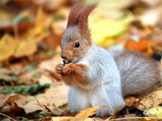

Білка Бердмора подібна до вигляду з нашою білкою, але трохи дрібніше. Маса її
близько 180-200 г. Густе і м'яке хутро спинної сторони сірувато-коричневе, голова і боки сірі, черевна сторона жовтувато-біла.
З боків простягається чорно-світло-коричнева смужка. Пухнастий хвіст темний, подібний до забарвлення зі спиною.
Білка Бердмоура
поширена в Бірмі, Таїланді та на півостровах Індокитай та Малакка. Заселяє густі ліси, узлісся, чагарникові зарості біля рисових полів, порослі чагарниками скелі. У гори піднімається на висоту до 1200 м. Велику частину часу проводить на землі, хоча може чудово залазити на дерева. По околицях рисових полів, серед заростей бамбука та високотрав'я з колючими чагарниками вона може сильно розмножуватися та завдавати шкоди врожаю. Особливо активними звірята стають перед заходом сонця, коли спадає спека, але ще світло. Вони влаштовують гнізда у низьких дуплах та у наземних сховищах. Розмножуються 2-3 десь у рік. Число дитинчат може бути до 6, але зазвичай трохи більше 4.